Clipboard history for Mac
Your clipboard,
remembered.
Jar keeps what you copy, privately on your Mac. Press ⌥V wherever you type to paste any of it again.
Free · macOS 15 or later · No account
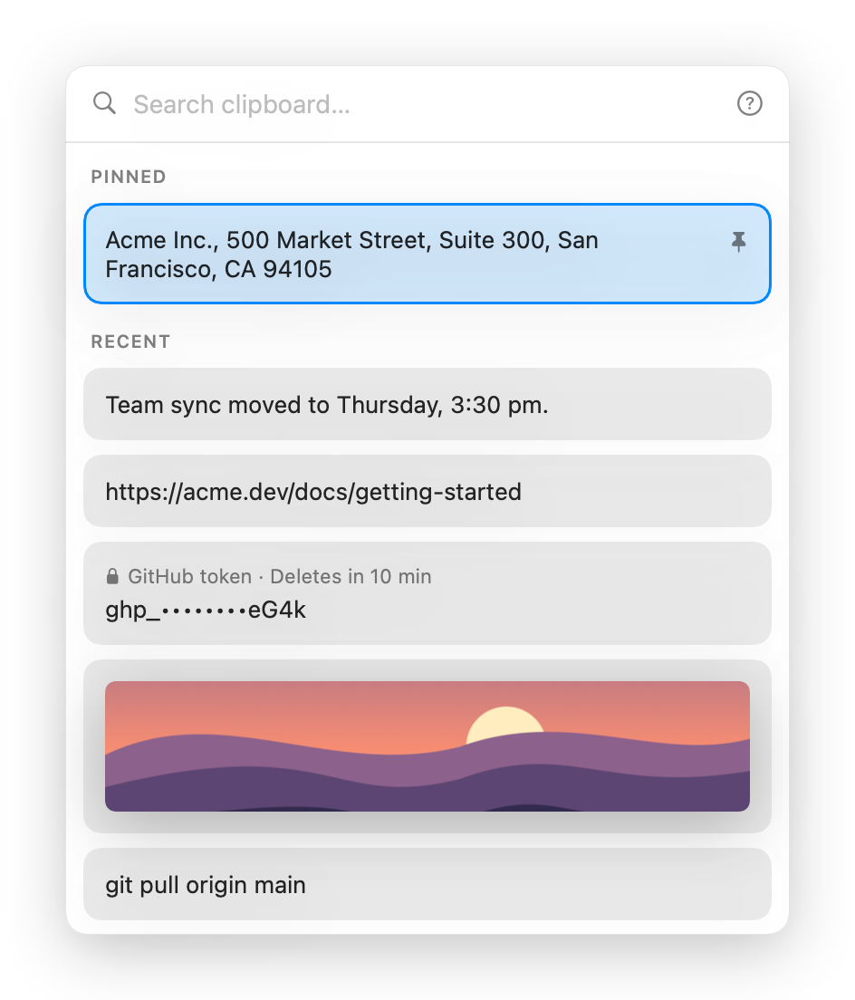
How it works
Copy. Press ⌥V. Paste.
Nothing new to learn. Keep copying the way you do, and reach back for anything when you need it.
Message to Anna
The docs are here:
P.S.
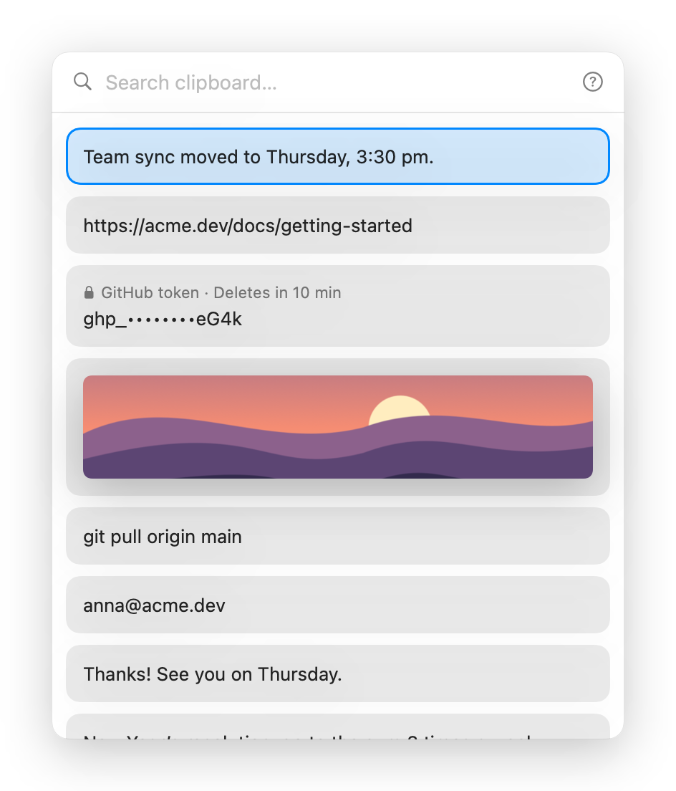
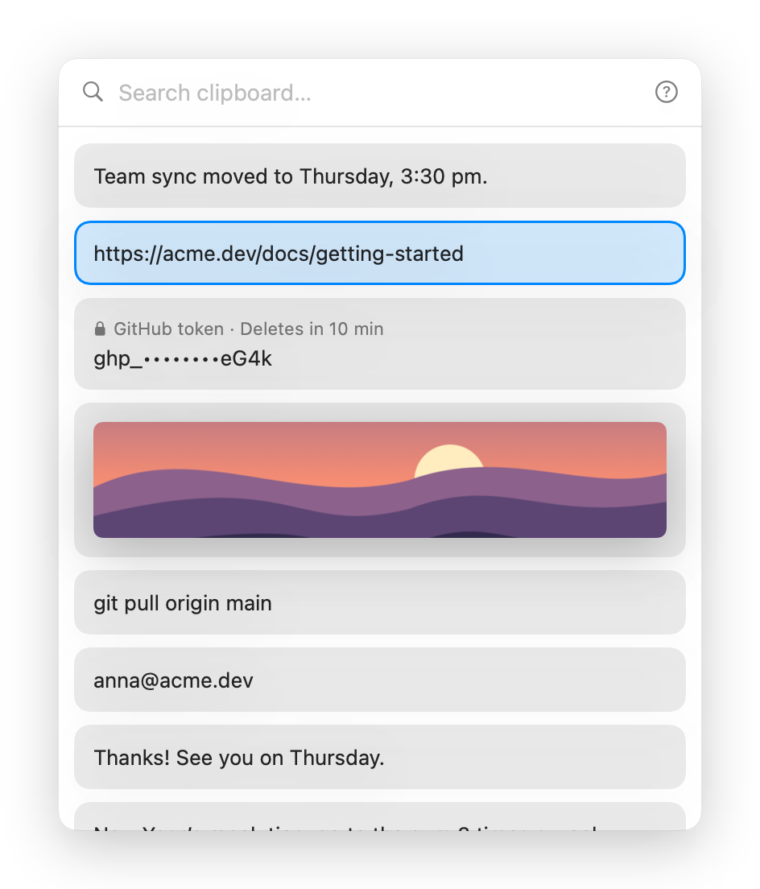
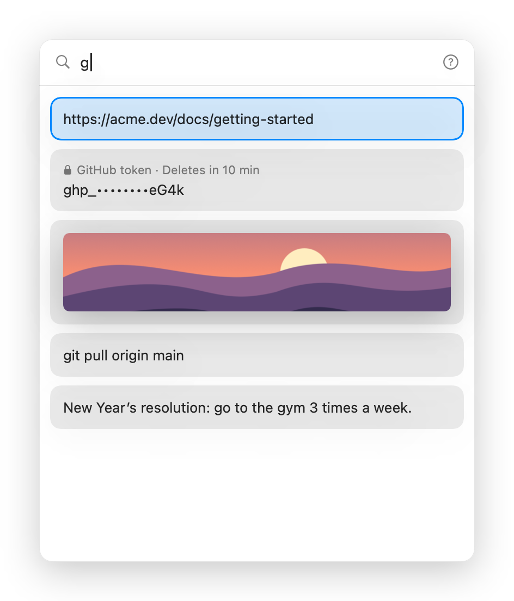
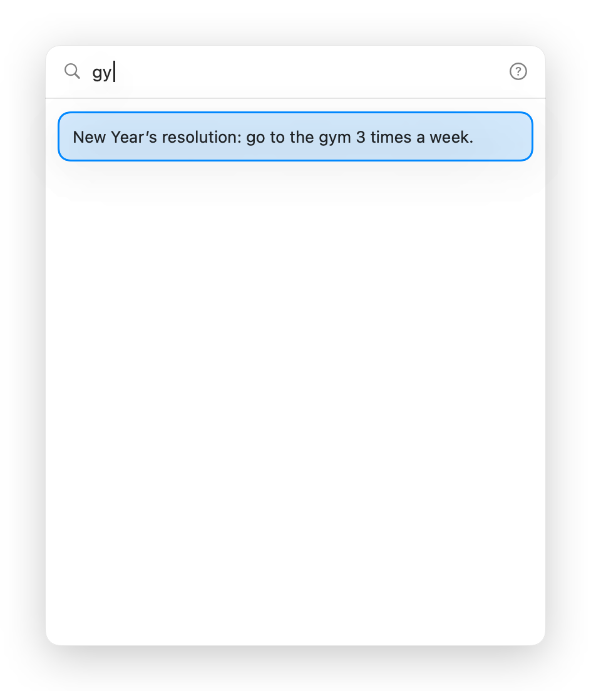
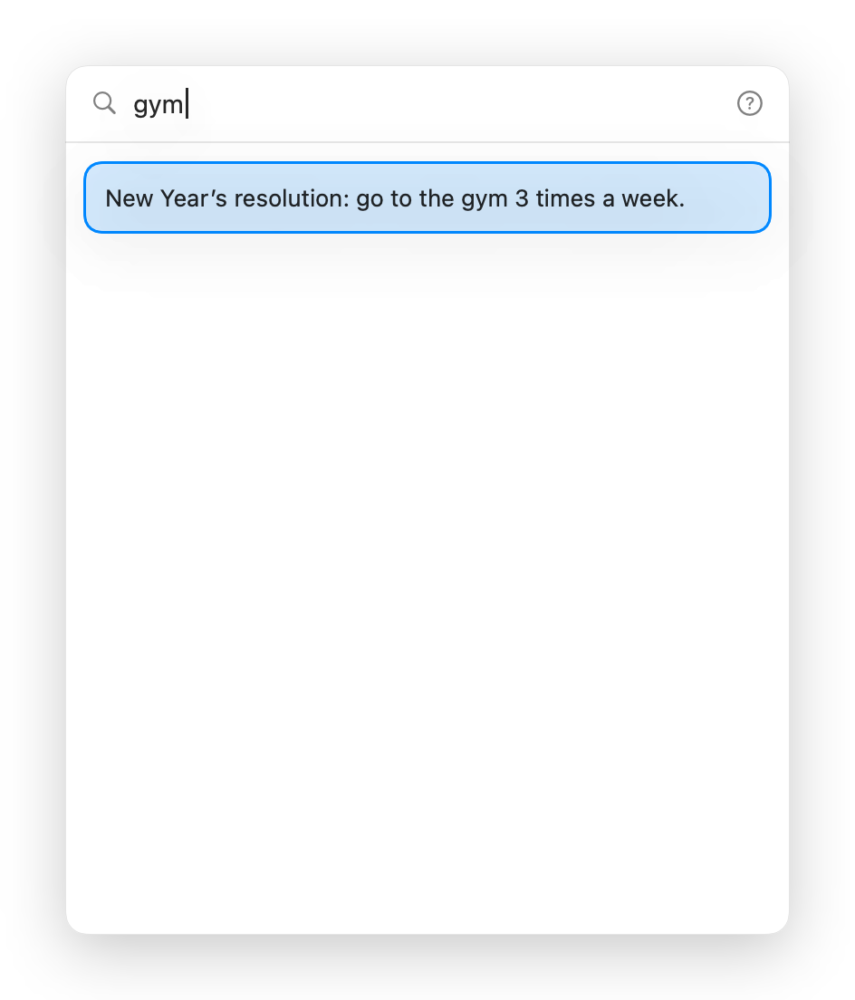
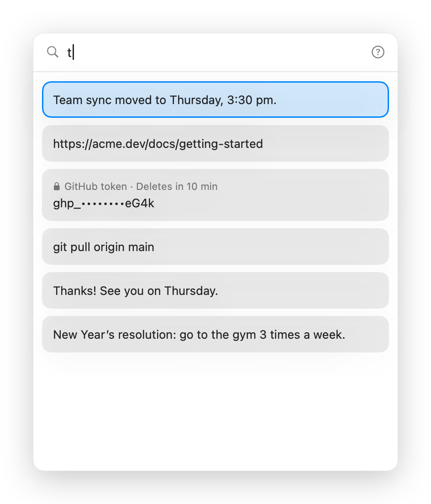
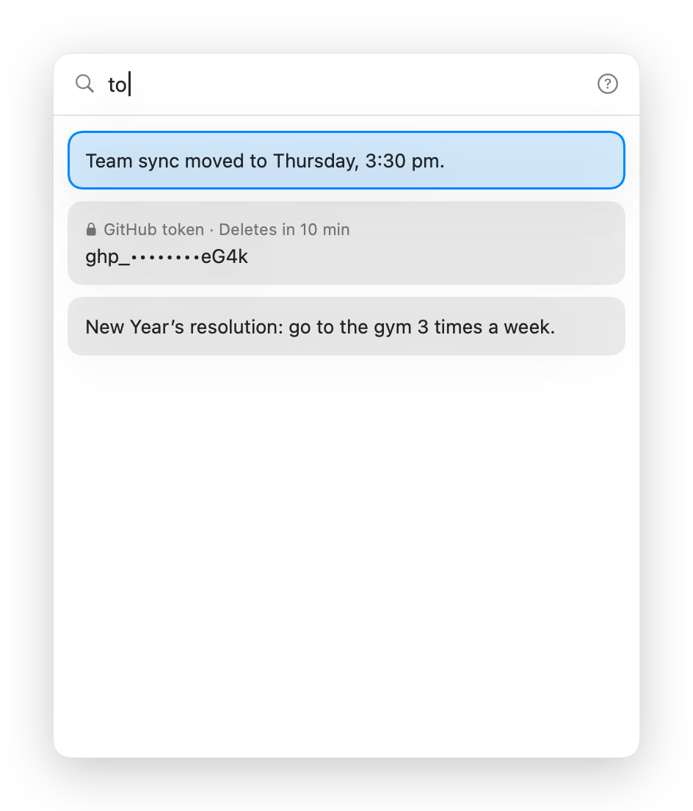
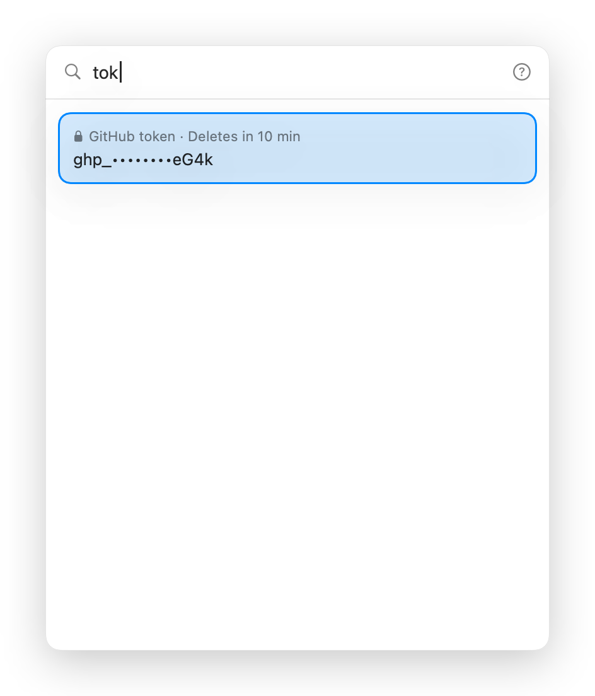
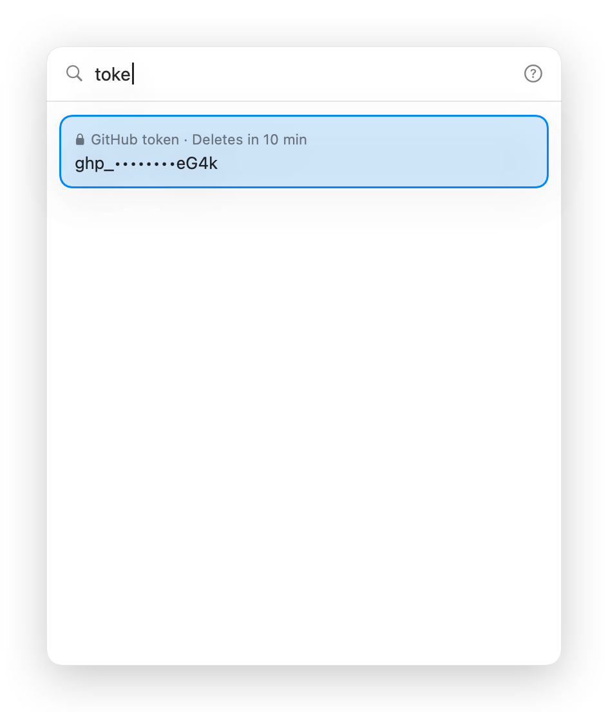
Copied on January 1
Made for the keyboard
Fast when you need it.
Invisible when you don’t.
Search as you type
Matches the exact characters you type, anywhere in an item. user_id finds user_id.
Pin what you reuse
Addresses, replies, commands. Pinned items stay at the top and are never removed automatically.
Plain text when you want it
Formatting is kept when the app provides it. ⇧↩ pastes without it, and images paste as images.
A history that lasts
Keeps 1,000 items by default, up to 10,000. Choose how long, or let pins be the only things that stay.
Hold ⌘ for quick paste
Numbers appear on the first nine items. Press ⌘1–⌘9 to paste one without moving the selection.
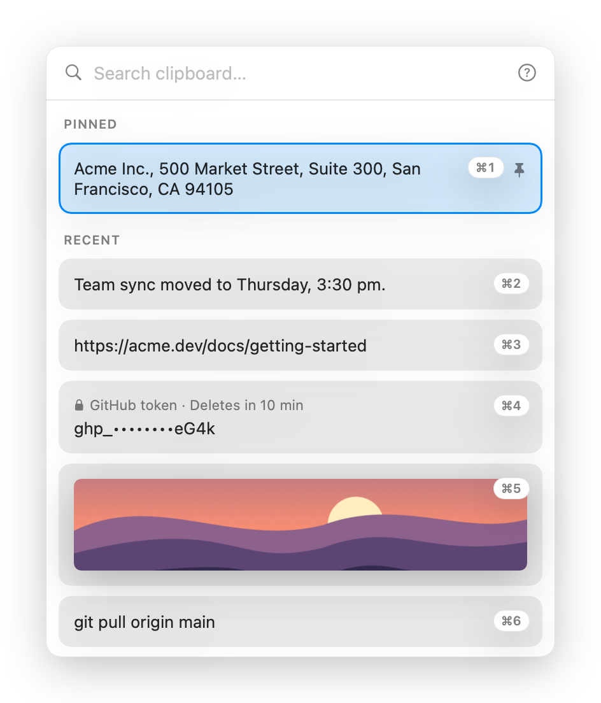
Shortcuts
Everything from the keyboard.
- ⌥V
- Open or close the panel. You can change it in Settings.
- ↩
- Paste the selected item
- ⇧↩
- Paste as plain text
- ⌘1–⌘9
- Paste one of the first nine items
- ↑↓
- Move the selection
- Space
- Preview the whole item
- ⌘P
- Pin or unpin
- ⌘⌫
- Delete the item
- Esc
- Clear the search, then close the panel
Press ? in the panel (or ⌘/) to see them all. A click on an item pastes it too.
Privacy
Your clipboard never leaves your Mac.
A clipboard sees passwords, tokens and private notes. Jar is built so none of it can go anywhere.
No network access
The app is sandboxed with no network permission at all, so it cannot send anything. No sync, by design.
No account, no analytics
Nothing to sign up for. No tracking, no telemetry, no crash-reporting SDK.
Skips password managers
Copies that password managers mark as private are never saved. Apple Passwords, Keychain Access and 1Password are ignored, and you can add any app.
Masks secrets
API keys, tokens, private keys, passwords in config lines and card numbers show up masked, stay out of search and are deleted after 10 minutes. They still paste normally.
Forget on demand
Forget the last 5 to 60 minutes, skip the next copy, or pause from the menu bar.
Deleted means deleted
Deleting an item erases it from Jar’s database, not just from the list.
One optional permission
Pasting for you needs your OK.
To paste into another app, Jar presses ⌘V for you. macOS lists this under Accessibility, and Jar asks once, on first launch.
With it
- ↩, ⌘1–⌘9 or a click pastes straight into your app.
- The panel opens next to your text cursor.
Without it
- The item goes on your clipboard, and you press ⌘V.
- Everything else works the same.
Jar reads only where your text cursor is on screen, never the text in other apps. Turning direct paste on
Questions
Good to know.
How much does it cost?
Jar is free. There is no account and nothing to sign up for.
Why not use the clipboard history in Spotlight?
macOS 26 has one: press ⌘Space, then ⌘4. It keeps items for up to 7 days, and you paste with ⌘V yourself. Jar keeps history as long as you like, adds pins and its own shortcut, ignores the apps you choose, and can paste for you.
Will it save my passwords and API keys?
It skips copies that password managers mark as private, and ignores Apple Passwords, Keychain Access and 1Password by default. When you copy something that looks like a secret from anywhere else, such as an API key, a token, a private key, a PASSWORD= line or a card number, Jar shows it masked, leaves it out of search and deletes it after 10 minutes. You can change the time or choose not to save secrets at all. Detection works by known patterns, so a secret in an unusual format can slip through; ignore that app or pause capture when in doubt.
What does it keep?
Text (with its formatting when available) and images. It does not keep copied files. Text over 5 MB and images over 25 MB are skipped.
Can I change ⌥V?
Yes, in Settings → General. ⌥V normally types a character (√ on a US keyboard), and Jar takes it over in every app, so pick another shortcut if you use it.
Does it sync with iCloud or my iPhone?
No. Jar has no network access at all. Your history exists only on the Mac where you copied it.
Is Jar related to Java's jar tool?
No. Jar is a clipboard history app for macOS and has nothing to do with Java archives.
Compare Jar with Maccy, Paste, Raycast and Spotlight
Facts as of November 22, 2026, each with a source. Jar facts describe version 1.0. Corrections are welcome at dmytro.bakai@gmail.com.
| Feature | Jar 1.0 | Maccy 2.8.0 | Paste | Raycast Clipboard History | Spotlight (macOS 26) |
|---|---|---|---|---|---|
| Price | Free | Free from GitHub and Homebrew, or $9.99 on the Mac App Store1,2 | Subscription: $29.99 a year; lifetime option listed3 | In the free plan; Pro is $10 a month or $96 a year. Not on the App Store4 | Free, built in |
| History kept | Up to 10,000 items (1,000 by default); pins kept | Up to 999 items (200 by default)5 | Unlimited3 | 3 months free; unlimited with Pro4 | 30 min, 8 h or 7 days6 |
| Pinned items | Yes, in a section at the top | Yes1 | Yes, pinboards3 | Yes7 | No8 |
| How you open it | ⌥V, configurable | ⇧⌘C, configurable1 | — | — | ⌘Space, then ⌘49 |
| Return pastes into the app you were using | Yes, with the optional Accessibility permission; otherwise it copies and asks you to press ⌘V | Copies by default; pasting is an opt-in setting1 | Yes, with the Accessibility permission10 | Yes7 | No: copy, then press ⌘V yourself9 |
| Search | Exact text, ignoring case, in the first 20,000 characters of each item | Exact by default, plus fuzzy, regex and mixed modes; first 1,000 characters11 | Search with filters by app, type, date and device3 | Search with a type filter7 | — |
| Finds text inside images (OCR) | No | Yes12 | Yes3 | Yes7 | — |
| Skips password-manager items | Yes; Passwords, Keychain Access and 1Password ignored by default | Yes13 | Yes; notes that some browser extensions slip through14 | Passwords and Keychain are on its disabled-apps list by default7 | Relies on apps marking copies as concealed8 |
| Ignore apps you choose | Yes | Yes, plus an allow-list mode13 | Yes14 | Yes7 | No8 |
| Paste several items in order | No | No (built, then disabled)15 | Yes, Paste Stack16 | Yes, Paste Sequentially7 | — |
| Forget the last few minutes | Yes, 5 to 60 minutes, plus Ignore Next Copy | — | — | Yes, 5 minutes to 24 hours7 | Clear all only6 |
| Sync across devices | No, by design | No (planned for Maccy 3)17 | Yes, iCloud3 | Yes, with Pro4 | — |
| App Store privacy label | Data Not Collected | Data Not Collected2 | Lists Device ID, Purchases, Usage Data and Crash Data3 | Not on the App Store | Part of macOS |
| Minimum macOS | 15 | 142 | 143 | — | 26 |
Credit where it is due: Maccy is free, open source (MIT) and has features Jar lacks, such as text recognition in images, Shortcuts actions and many more languages. Paste and Raycast offer sync, sequential paste and much more. If you need those, they are good choices.
Sources (accessed November 22, 2026)
- Maccy README
- Maccy on the Mac App Store
- Paste on the App Store
- Raycast pricing
- Maccy source: StorageSettingsPane.swift
- MacRumors, Nov 4, 2025: Spotlight clipboard settings in macOS 26.1
- Raycast manual: Clipboard History
- DEV post, Jul 14, 2026 (written by the developer of another clipboard app)
- Apple Support: clipboard history in Spotlight
- Paste help: copy and paste not working
- Maccy source: HistoryItem.swift and Search.swift
- Maccy release notes
- Maccy source: Clipboard.swift
- Paste help: what Paste captures
- Maccy pull request #1206
- Paste help: using Paste Stack
- Maccy discussion #1577: Maccy 3 plan
Copy freely. Jar remembers.
Free · macOS 15 or later · No account